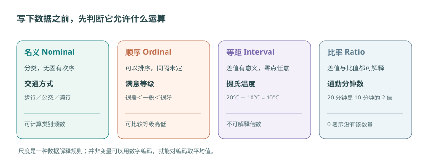
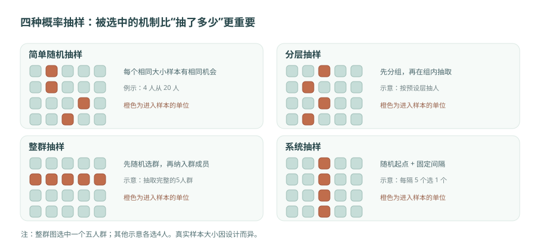

数据的类型与来源：先定义，再分析
同一张表可以包含类别、等级、时间、数量。决定它们应该怎样被计算的，不是单元格显示成了数字还是汉字，而是这些数字在现实中代表什么。
01 · 一个调查表包含不同数据
先把每一行定义成一位受访学生，把每一列定义成一次测量；再判断每个字段在真实世界中的含义。“用 1 表示公交、2 表示步行”只是编码，1 和 2 的平均值不会自动变成一种有意义的交通方式。先确定变量，再确定图表与模型。
| 学生 | 通勤方式 | 满意等级 | 气温（°C） | 耗时（min） |
|---|---|---|---|---|
| S01 | 步行 | 一般 | 20 | 12 |
| S02 | 公交 | 满意 | 16 | 35 |
| S03 | 骑行 | 不满意 | 18 | 20 |
| S04 | 公交 | 一般 | 22 | 25 |
这 4 行均为演示用合成记录，不代表任何学校的实际数据。
02 · 变量的四种测量尺度

定性（categorical）
名义如交通方式，没有大小顺序；顺序如不满意／一般／满意，等级可以排序，但等级间距不保证相同。
定量（numerical）
离散如一天到店人数，通常按整数计数；连续如精确通勤时间，理论上可在区间内取任意实数，实际测量有精度限制。
经典四尺度并非统计建模的唯一分类方法，但非常适合检查解释：摄氏 20°C 比 10°C 高 10°C，却不能说“温度是两倍”。分钟数的 0 通常表示没有耗时，因此 20 分钟确实是 10 分钟的两倍。
数字编码不是数值尺度
把“步行＝1、公交＝2、骑行＝3”输入 Excel 后，软件可以计算 2.0，但这不能解释为“平均通勤方式”。如果你需要类别概况，请使用频数、比例或众数。
03 · 一行一条记录，一列一个变量
整洁数据（tidy data）常用的组织原则是“每列一个变量、每行一个观测、每个单元格一个值”。这是便于筛选、分组和复现的实用约定，不代表所有科学数据都必须只有一张平面表。记录前还应定义：单位是什么、哪些值缺失、重复记录怎样识别、单位是否一致。
- 检查主键：学生编号是标识符，不是适合取平均值的数值特征。
- 明确缺失：空白可能表示未回答、数据丢失或不适用，不能一律记作 0。
- 写清单位：通勤耗时应记录是分钟、秒还是小时，气温应注明摄氏或其他刻度。
04 · 横截面、时间序列与面板
横截面（cross-section）
在同一观察时段，比较不同学生的通勤时间。例如周一调查 300 人。
时间序列（time series）
连续 30 天记录同一校门的日均通勤时间，关注时间顺序、趋势和季节性。
面板（panel）
每周追踪同样的 50 人，既有个体差异又有时间变化，分析时不能简单视作互相独立的所有行。
重复横截面
每周抽取一批不同学生。虽然有多个时点，但不等于追踪了同一批人。
时间结构会影响独立性假设：同一名学生连续多日的记录，可能彼此相关。如果无视这种相关性，标准误与显著性判断可能失真。
05 · 如何抽取样本
抽样之前先定义目标总体和抽样框（frame）：例如“本学期已注册的所有在校学生”，用学校名册作为候选框；然后决定抽取单位、概率和联系方法。

简单随机抽样：从完整的 20 人名单中等概率抽取 4 个不重复编号；分层抽样：按年级划分不同层，再在每层随机抽人，可确保关键层有样本；整群抽样：以班级为群先抽班级，再调查选中班级的所有人；系统抽样：名单随机起点后按间隔选人，需警惕名单与间隔形成周期性相关。
“从图书馆门口遇到谁就问谁”是便利抽样，不是简单随机抽样。四种概率抽样也不保证数据完全无偏；名册覆盖、拒答、后期加权等仍影响结论。
06 · 从抽样框到报告的偏差
与其只问“抽到了多少人”，不如追踪完整过程：总体 → 抽样框 → 被选中 → 被联系 → 完成问卷 → 有效记录。在每一步，单位都可能消失或被改变。AAPOR 建议公开抽样、调查模式、问卷措辞、参与情况和处理方法，以便他人评估结果。
注意区分抽样误差与其他误差
概率抽样的抽样误差可以在相应设计假设下估计；覆盖不足、无应答与测量错误不一定随样本量增大而消失。非概率样本报告中的“95% 误差 ±3%”不能未经额外模型与假设就照搬经典随机抽样公式。
07 · 可运行示例与练习
四人的通勤记录分别为步行、公交、骑行、公交；时间为 12、35、20、25 分钟。交通方式的众数为公交（2/4），平均耗时为 (12+35+20+25)/4 = 23 分钟。前者是类别汇总，后者是有单位的数量均值。
mode = ["步行", "公交", "骑行", "公交"]
minutes = [12, 35, 20, 25]
from collections import Counter
print(Counter(mode).most_common(1)) # [('公交', 2)]
print(sum(minutes) / len(minutes)) # 23.0按问题选择合适的摘要
频数 / 比例 / 众数；不要对类别编码求均值。
自我检查
问题：你每周都抽取 100 位不同学生来回答同一问卷，这算面板数据吗？
参考答案：通常是重复横截面。只有能追踪相同观测单位在多个时点的记录，才构成典型面板结构。
参考资料
- OpenStax Introductory Statistics 2e, §1.3：测量尺度与运算解释。
- OpenIntro Statistics, Chapter 1：变量、抽样与观察性研究。
- AAPOR, Best Practices for Survey Research：调查设计与信息公开。
所有演示数据、抽样小图均为教学构造，不对应真实学生或实地调查。